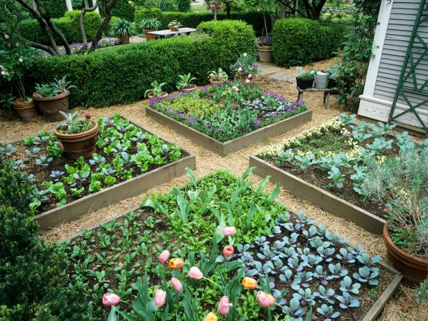
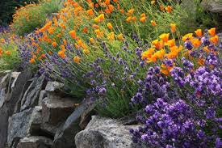
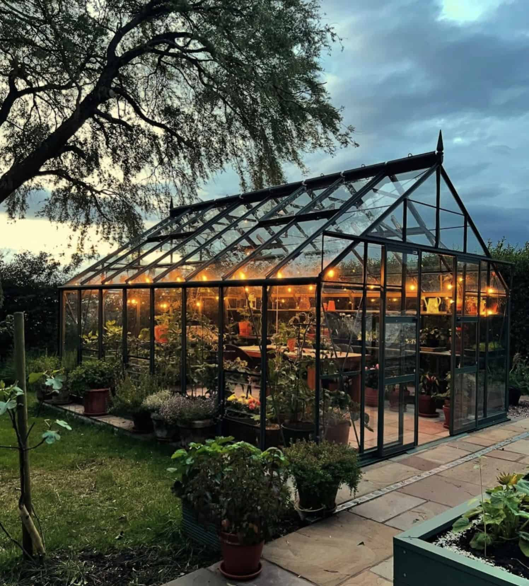
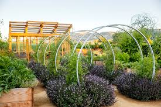

Garden Styles

Raised Bed Garden
Raised beds make gardening neat, organized, and easy for beginners. They improve soil drainage and make weeding simple.

Flower/Rock Garden
Flower and rock gardens add color and attract pollinators. They’re easy to maintain and great for rocky soil.

Greenhouse
Greenhouses let you garden year-round and experiment with delicate crops, safe from weather and pests.

Arched Trellis Garden
Trellis gardens are beautiful and space-saving, perfect for beans, peas, and cucumbers.